Enhanced Visualization
Yichao Hua
2024-07-11
Visualization.RmdGenerate a Heatmap Plot
Introduction
The Heatmap function provides a flexible and
comprehensive way to visualize matrices, especially those produced by
the CalcStats function. This vignette provides a quick
overview of how to utilize the various features and capabilities of the
Heatmap function to generate customized visualizations.
Basic Usage
First, let’s generate a sample matrix using the
CalcStats function:
library(Seurat)
library(SeuratExtend)
# Assuming pbmc data and VariableFeatures function are available
genes <- VariableFeatures(pbmc)
toplot <- CalcStats(pbmc, features = genes, method = "zscore", order = "p", n = 5)Now, we can produce a basic heatmap:
Heatmap(toplot, lab_fill = "zscore")
Customizing the Heatmap
Adjusting Color Schemes
The color_scheme parameter allows for flexibility in
visualizing data. Here are some ways to change the color theme of your
heatmap:
# White to dark green
Heatmap(toplot, lab_fill = "zscore", color_scheme = c("white", muted("green")))
# Dark blue to light yellow (centered at 0) to dark red
Heatmap(toplot, lab_fill = "zscore", color_scheme = c(
low = muted("blue"),
mid = "lightyellow",
high = muted("red"))
)
You can also use predefined color schemes, such as those from the viridis package:
Heatmap(toplot, lab_fill = "zscore", color_scheme = "A")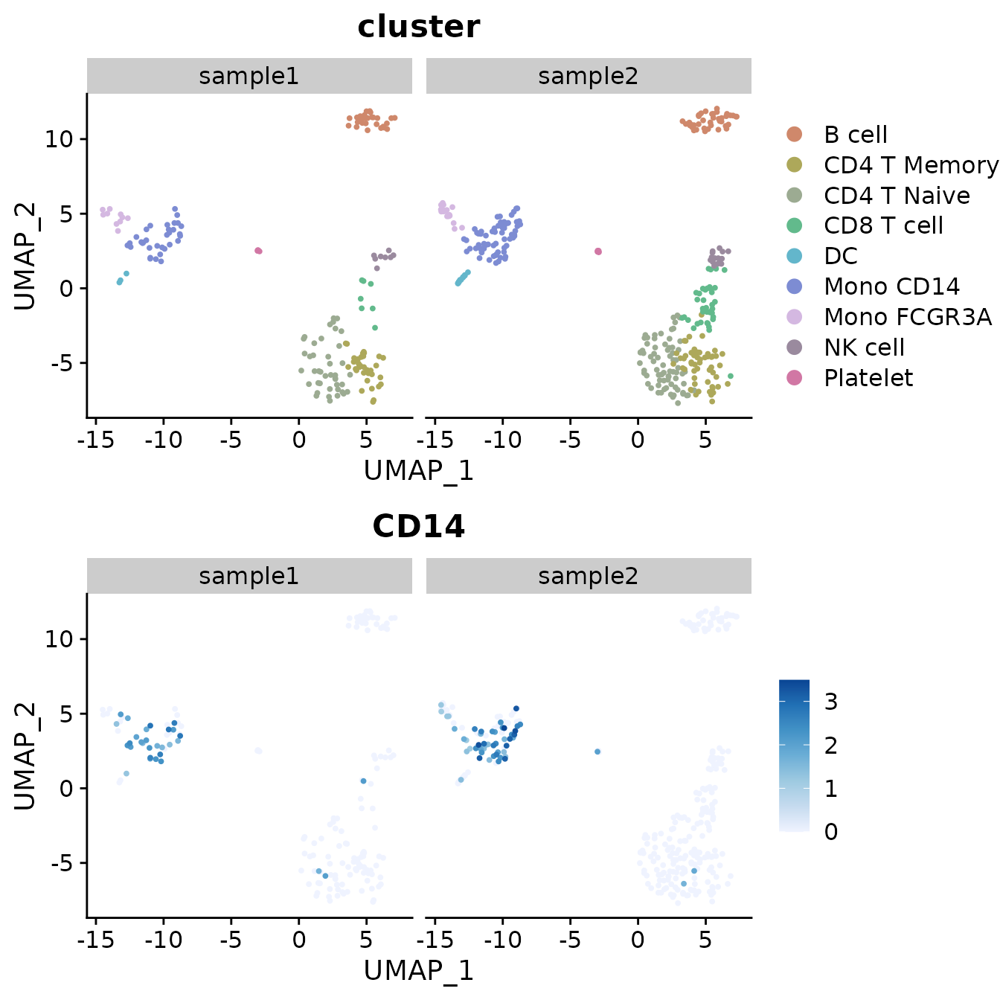
Modifying Axis and Labels
Sometimes, the first name on the x-axis might be too long and exceed
the left boundary of the plot. To prevent this issue and ensure all
labels are fully visible, you can increase the space on the left side of
the plot by adjusting the plot.margin parameter. For
example, to add more space, you can specify a larger value for the left
margin (l) like this:
Heatmap(toplot, lab_fill = "zscore", plot.margin = margin(l = 30))
For denser matrices, you may wish to only show a subset of gene names:
toplot2 <- CalcStats(pbmc, features = genes[1:500], method = "zscore", order = "p")
Heatmap(toplot2, lab_fill = "zscore", feature_text_subset = genes[1:20], expand_limits_x = c(-0.5, 11))

Create an Enhanced Dimensional Reduction Plot
Introduction
In Seurat, dimension reduction plots such as UMAP are typically
created using DimPlot for discrete variables and
FeaturePlot for continuous variables.
SeuratExtend simplifies this process with
DimPlot2, which does not require differentiation between
variable types. This function automatically recognizes the type of input
parameters, whether discrete or continuous. DimPlot2
retains most of the usage conventions of both DimPlot and
FeaturePlot, allowing for an easy transition if you are
accustomed to the original Seurat functions. Additionally,
DimPlot2 introduces numerous extra parameters to enrich the
customization of the plots.
Basic Usage
To generate a basic dimension reduction plot, simply call
DimPlot2 with your Seurat object:
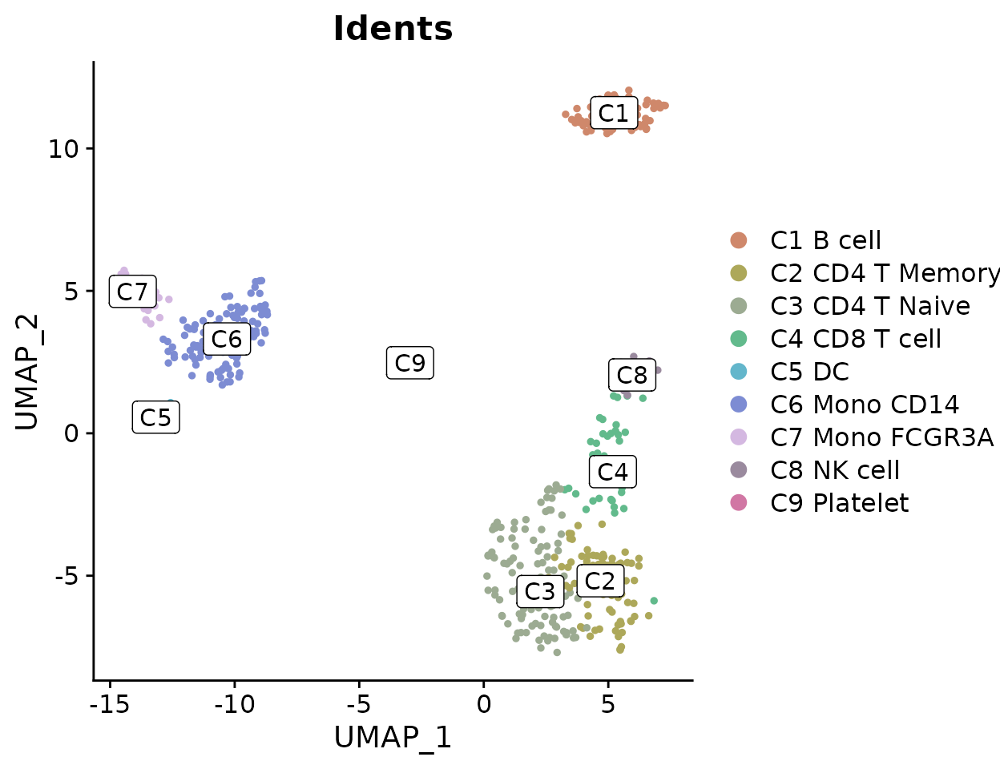
Visualizing Different Variables
DimPlot2 can handle both discrete and continuous
variables seamlessly. Here’s how to input different variables into the
plot:
Splitting by Variable
You can also split the visualization by a specific variable, which is particularly useful for comparative analysis across conditions or identities:

Highlighting Specific Cells
To highlight cells of interest, such as a specific cluster, you can define the cells explicitly and use them in your plot:

Advanced Customization
For each variable, you can specify custom colors, adjust themes, and more. For detailed information on color customization, refer to the Explore Color Functions section:
DimPlot2(
pbmc,
features = c("cluster", "orig.ident", "CD14", "CD3D"),
cols = list(
"cluster" = "pro_blue",
"CD14" = "D",
"CD3D" = c("#EEEEEE", "black")
),
theme = NoAxes())
Adding Labels and Boxes
To further enhance the plot, you can add labels and bounding boxes to clearly delineate different groups or points of interest:
Simplifying Labels with Indices
Sometimes, cluster names are too lengthy and can make the plot appear cluttered when displayed with labels. To address this, consider using indices to replace the cluster names in the plot, which helps make the visualization cleaner. For instance, you can label clusters as ‘C1’, ‘C2’, etc., on the plot itself, while detailing what each index stands for (e.g., ‘C1: B cell’, ‘C2: CD4 T Memory’) in the figure legend:
DimPlot2(pbmc, index.title = "C", box = TRUE, label.color = "black")
This approach ensures that the plot remains legible and aesthetically pleasing, even when dealing with numerous or complex labels.
Simultaneous Display of Three Features on a Dimension Reduction Plot
In SeuratExtend, a unique visualization method allows
for the simultaneous display of three features on the same dimension
reduction plot. The functions FeaturePlot3 and
FeaturePlot3.grid employ a color mixing system (either RYB
or RGB) to represent three different genes (or other continuous
variables). This method uses the principles of color mixing to
quantitatively display the expression levels or intensities of these
three features in each cell.
RYB and RGB Color Systems
In the RGB system, black represents no or low expression, and
brighter colors indicate higher levels: 
In the RYB system, white represents no expression, and deeper colors
indicate higher expression levels: 
Examples Using RYB and RGB Systems
Here’s how to display three markers using the RYB system, with red for CD3D, yellow for CD14, and blue for CD79A:
FeaturePlot3(pbmc, color = "ryb", feature.1 = "CD3D", feature.2 = "CD14", feature.3 = "CD79A", pt.size = 0.5)For the RGB system, with red for CD3D, green for CD14, and blue for CD79A:
FeaturePlot3(pbmc, color = "rgb", feature.1 = "CD3D", feature.2 = "CD14", feature.3 = "CD79A", pt.size = 1)Batch Visualization with FeaturePlot3.grid
FeaturePlot3.grid extends FeaturePlot3 by
allowing multiple plots to be generated in one go. The
features parameter requires a vector where every three
values are assigned a color (RYB or RGB) and placed together in one
plot. If you wish to skip a color, use NA as a
placeholder.
For instance, to place the following five genes into two plots using the RYB system, and skip yellow in the second plot:
FeaturePlot3.grid(pbmc, features = c("CD3D", "CD14", "CD79A", "FCGR3A", NA, "LYZ"), pt.size = 0.5)
Using the RGB system:
FeaturePlot3.grid(pbmc, features = c("CD3D", "CD14", "CD79A", "FCGR3A", NA, "LYZ"), color = "rgb", pt.size = 1)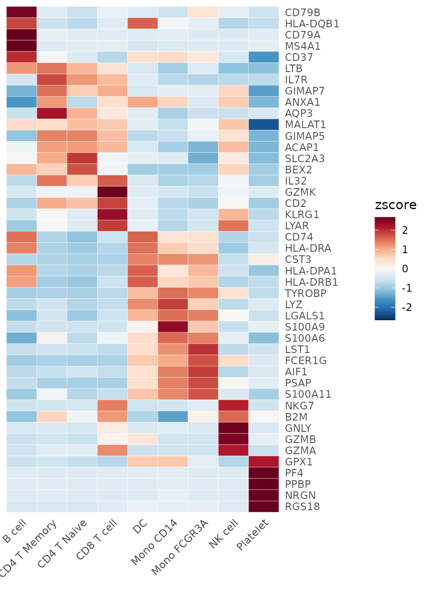
Tips on Point Size
The background is usually white, so the choice of color system and
point size can significantly affect visual perception. In the RYB
system, where higher expression results in darker colors, a smaller
pt.size is preferable to prevent overlapping points. In
contrast, in the RGB system, higher expressions result in lighter
colors, potentially leading to visibility issues for highly expressed
cells that may blend into the white background. Here, a larger
pt.size is recommended so that the darker, low-expression
points can form a “background” to highlight the lighter, high-expression
points.
Create an Enhanced Violin Plot
Introduction
The VlnPlot2 function from the SeuratExtend
package offers a revamped version of the traditional violin plot,
designed to be more space-efficient while introducing a wide array of
additional visualization features. Unlike the original
VlnPlot in Seurat, the enhanced VlnPlot2
integrates functionalities to superimpose boxplots, easily add
statistical annotations, and offers greater flexibility in the plot
presentation.
This function has been optimized for visualizing multiple variables and can handle both Seurat objects and matrices.
Usage
Depending on your input, whether it’s a Seurat object or a matrix,
the method to employ VlnPlot2 will differ.
Using a Seurat Object
Basic violin plot with box plot and points: To begin with, select the genes you intend to analyze. Here’s an example using three genes:
library(Seurat)
library(SeuratExtend)
genes <- c("CD3D","CD14","CD79A")
VlnPlot2(pbmc, features = genes, ncol = 1)
Customizing plot elements: The function allows for versatile visual alterations. For instance, one might want to omit the violin plot while retaining the box plot, using a quasirandom style for point adjustment.
VlnPlot2(pbmc, features = genes, violin = F, pt.style = "quasirandom", ncol = 1)Hiding data points but retaining outliers:
VlnPlot2(pbmc, features = genes, pt = FALSE, ncol = 1)
Hide points and outliers for a cleaner appearance:
VlnPlot2(pbmc, features = genes, pt = FALSE, hide.outlier = T, ncol = 1)
Grouping by cluster and splitting each cluster by samples:
VlnPlot2(pbmc, features = genes, group.by = "cluster", split.by = "orig.ident")
Filtering for certain subtypes and arranging plots in columns:
cells <- colnames(pbmc)[pbmc$cluster %in% c("B cell", "Mono CD14", "CD8 T cell")]
VlnPlot2(pbmc, features = genes, group.by = "cluster", cells = cells)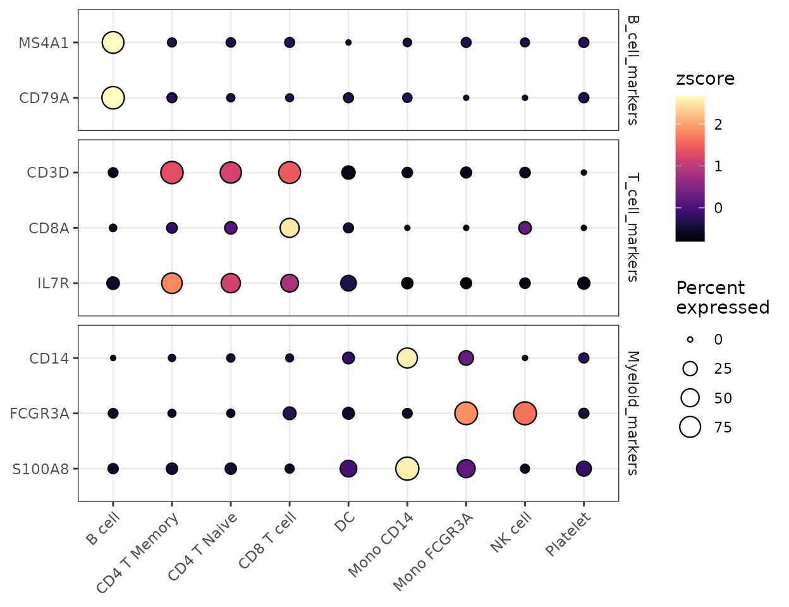
Adding statistical annotations using the wilcoxon test:
VlnPlot2(pbmc, features = genes, group.by = "cluster", cell = cells,
stat.method = "wilcox.test", hide.ns = TRUE)
Restricting statistical comparisons and using t-test:
VlnPlot2(pbmc, features = genes, group.by = "cluster", cell = cells,
stat.method = "t.test", comparisons = list(c(1,2), c(1,3)), hide.ns = FALSE)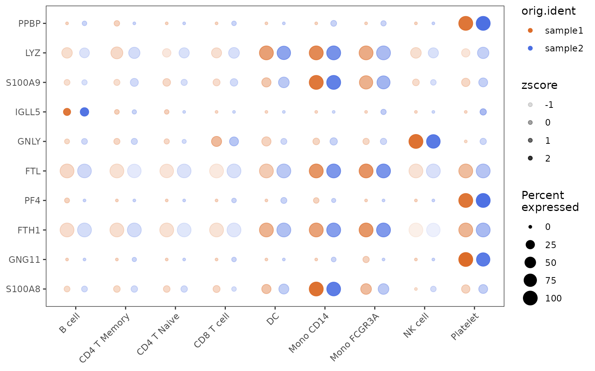
Using a Matrix
For an example employing a matrix input, let’s consider you have performed a Geneset Enrichment Analysis (GSEA) using the Hallmark 50 geneset to get the AUCell matrix:
pbmc <- GeneSetAnalysis(pbmc, genesets = hall50$human)
matr <- pbmc@misc$AUCell$genesets
# Plotting the first three pathways:
VlnPlot2(matr[1:3,], f = pbmc$cluster, ncol = 1)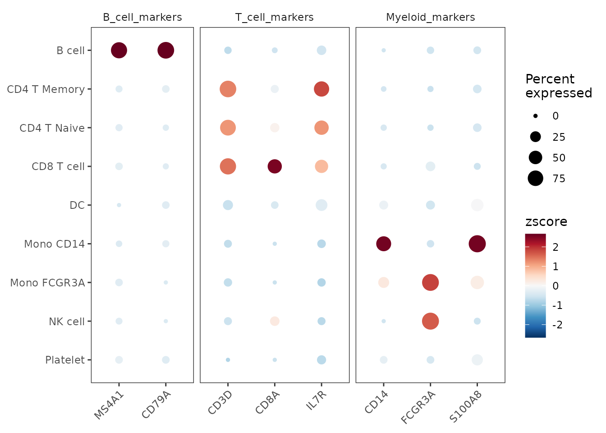
Visualize Cluster Distribution in Samples
Introduction
The ClusterDistrBar function is designed to visualize
the distribution of clusters across different samples. It can show both
absolute counts and proportions, and it allows for various
customizations including axis reversal and normalization.
Basic Usage
To create a basic bar plot showing the distribution of clusters within samples, simply specify the origin (sample identifier) and cluster variables from your dataset:
ClusterDistrBar(origin = pbmc$orig.ident, cluster = pbmc$cluster)
Displaying Absolute Cell Counts
If you prefer to visualize the absolute cell count rather than
proportions, set the percent parameter to
FALSE:
ClusterDistrBar(origin = pbmc$orig.ident, cluster = pbmc$cluster, percent = FALSE)Normalized Proportions with Reversed Axes
For a clearer view that normalizes the data by sample size and
reverses the x and y axes, use the rev and
normalize parameters:
ClusterDistrBar(origin = pbmc$orig.ident, cluster = pbmc$cluster, rev = TRUE, normalize = TRUE)Non-Normalized with Reversed Axes
To reverse the axes without normalizing by sample size:
ClusterDistrBar(origin = pbmc$orig.ident, cluster = pbmc$cluster, rev = TRUE, normalize = FALSE)Vertical Bar Plot
If a vertical orientation is preferred over the default horizontal
bars, set the flip parameter to FALSE:
ClusterDistrBar(origin = pbmc$orig.ident, cluster = pbmc$cluster, flip = FALSE)
Non-Stacked Bar Plot
If you prefer not to stack the bars, which can be useful for direct
comparisons of cluster sizes across samples, set the stack
parameter to FALSE:
ClusterDistrBar(origin = pbmc$orig.ident, cluster = pbmc$cluster, flip = FALSE, stack = FALSE)
Exporting Data Matrix
In cases where a visual plot is not required and only the underlying
data matrix is needed, set the plot parameter to
FALSE:
data_matrix <- ClusterDistrBar(origin = pbmc$orig.ident, cluster = pbmc$cluster, plot = FALSE)
# View the matrix
print(data_matrix)## sample1 sample2
## B cell 16.071429 12.048193
## CD4 T Memory 20.238095 16.566265
## CD4 T Naive 25.000000 22.289157
## CD8 T cell 4.166667 11.746988
## DC 1.785714 3.614458
## Mono CD14 19.642857 19.879518
## Mono FCGR3A 5.952381 6.024096
## NK cell 4.761905 4.819277
## Platelet 2.380952 3.012048Generate a Waterfall Plot
Introduction
Waterfall plots are powerful visualization tools that can display differences between two conditions, showing gene expression, gene set enrichment, or other metrics. This function can handle inputs directly from Seurat objects or pre-processed matrices.
Preparing the Data
First, create a matrix to visualize using the
GeneSetAnalysis() function. In this example, rows represent
gene sets from the Hallmark 50, and columns represent individual cells.
If you have already created this matrix in the violin plot section, you
can skip this step.
library(SeuratExtend)
pbmc <- GeneSetAnalysis(pbmc, genesets = hall50$human)
matr <- pbmc@misc$AUCell$genesetsBasic Waterfall Plot
Generate a basic waterfall plot to compare two cell types, such as ‘CD14+ Mono’ with ‘CD8 T cells’:
WaterfallPlot(matr, f = pbmc$cluster, ident.1 = "Mono CD14", ident.2 = "CD8 T cell")##
## Attaching package: 'tidyr'## The following object is masked from 'package:S4Vectors':
##
## expand## The following object is masked from 'package:magrittr':
##
## extract## The following object is masked from 'package:reshape2':
##
## smiths## The following objects are masked from 'package:Matrix':
##
## expand, pack, unpack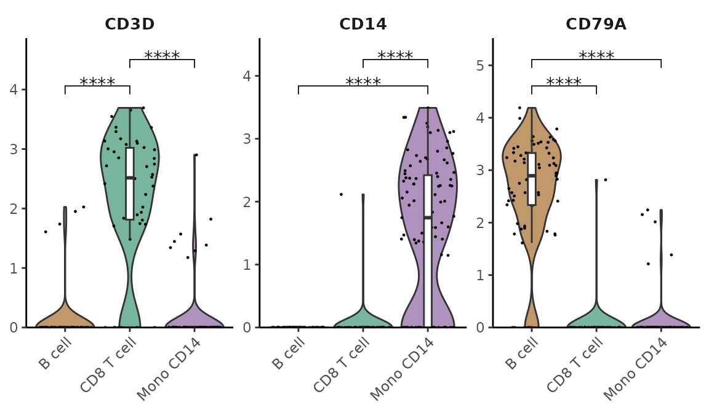
Filtering by Bar Length
To focus on significant differences, you can filter the plot to include only bars exceeding a specific threshold. For instance, keeping only bars with a length (t-score in this instance) greater than 1:
WaterfallPlot(matr, f = pbmc$cluster, ident.1 = "Mono CD14", ident.2 = "CD8 T cell", len.threshold = 1)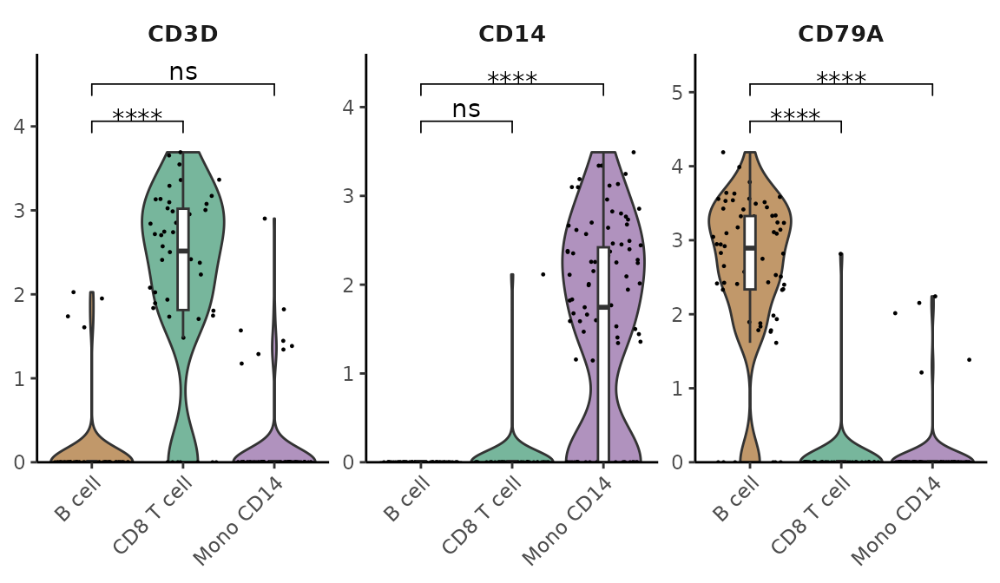
Comparing Gene Expression
You can also use the waterfall plot to compare expression levels of genes directly from a Seurat object, using LogFC to determine the bar length. Here’s how to do it for the top 100 variable features:
genes <- VariableFeatures(pbmc)[1:80]
WaterfallPlot(
pbmc, group.by = "cluster", features = genes,
ident.1 = "Mono CD14", ident.2 = "CD8 T cell", length = "logFC")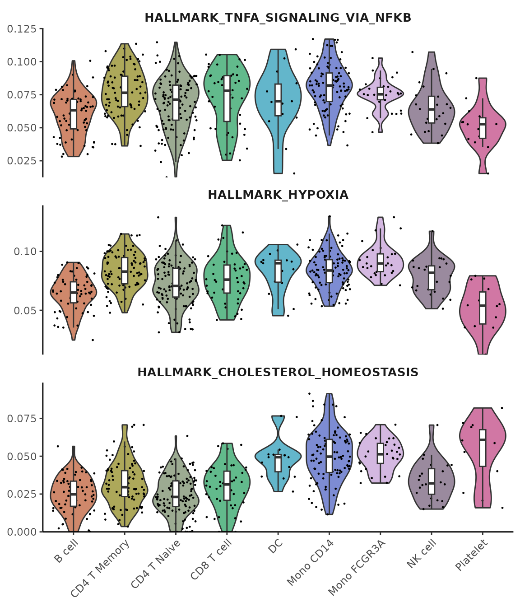
Focusing on Extremes
To further hone in on the most differentially expressed genes, you might want to keep only the top and bottom 20 genes. This can highlight the most critical differences between the two cell types:
WaterfallPlot(
pbmc, group.by = "cluster", features = genes,
ident.1 = "Mono CD14", ident.2 = "CD8 T cell", length = "logFC",
top.n = 20)Explore Color Functions
In this section, we will delve into the various color functions and
their applications within the SeuratExtend package. The
discussion is divided into three main parts:
- Introduction to the discrete color palette generation functions
color_proandcolor_iwh, which have presets for 2-50 colors in different styles. - Usage of color-related parameters (such as
colsorcol_theme) in visualization functions likeDimPlot2,VlnPlot2,Heatmap, andWaterfallPlot. - Additional color-related functions, including a custom algorithm for blending RYB colors.
Professional Discrete Color Presets with color_pro
The color_pro function is designed to generate
professional discrete color presets, ideal for data science
visualizations, particularly in fields like scRNA-seq analysis where
aesthetics must not compromise the clarity and seriousness of scientific
communication.
The Philosophy Behind color_pro
Choosing the right colors for scientific visualizations is crucial. Colors must be distinct enough to differentiate data points clearly but coordinated and subdued enough to maintain professionalism and avoid visual strain. Here are some examples of what to avoid in scientific plotting:
-
Coordinated but Indistinct Colors: Using monochromatic schemes can reduce visual distinction, which might cause data points to blend together.
Example of an inadvisable choice:
DimPlot2(pbmc, cols = "Greens")
-
Sufficiently Distinct but Overly Saturated Colors: High saturation can be visually aggressive and distracting, detracting from the scientific message.
Example of overly saturated colors:
DimPlot2(pbmc, cols = c("#ccffaa","#c00bff","#cfdb00","#0147ee","#f67900","#1b002c","#00e748","#e30146","#ffb1e8"))
-
Good Distinction and Coordination but Too Lively: While certain vibrant schemes might be engaging in an advertising context, they may be considered too informal for professional journal standards.
Example of colors that might be too lively:
DimPlot2(pbmc, cols = c("#ff2026","#cf5d00","#ffd03f","#649f00","#a3f83d","#82cc58","#6645fe","#d8009c","#ff43a2"))
While the RColorBrewer package offers some good solutions, its
options are limited and support a maximum of only 12 colors. This can be
inadequate for visualizing data with a larger number of clusters. The
default ggplot color palette, derived from hue_pal(), can assign an
arbitrary number of colors, but similarly suffers from insufficient
distinction when many colors are used. This is because the default
palette differentiates colors only based on hue, without utilizing
luminance and saturation, which limits its effectiveness. To address
these limitations, SeuratExtend provides
color_pro, which includes seven color schemes: “default”,
“light”, “red”, “yellow”, “green”, “blue”, and “purple”. These presets
are generated using the algorithm from I Want Hue (http://medialab.github.io/iwanthue/) with adjusted
parameters, which is optimized for creating color palettes that are
visually pleasing and distinctly separable.
Default Color Scheme
The “default” color scheme spans the entire hue domain but features reduced brightness and saturation, supporting 2 to 50 colors with five different presets per color. This scheme is ideal for general use where distinctiveness and subtlety are equally important.
Example using the “default” color scheme:
library(cowplot)
library(SeuratExtend)
plot_grid(
DimPlot2(pbmc, theme = NoAxes() + NoLegend()),
ClusterDistrBar(pbmc$orig.ident, pbmc$cluster, flip = FALSE) +
theme(axis.title.x = element_blank())
)
Light Color Scheme
The “light” color scheme also covers the entire hue range but with increased brightness and reduced saturation, making it suitable when using labels with darker texts which may require a lighter background for visibility.
Example using the “light” color scheme:
plot_grid(
DimPlot2(pbmc, label = TRUE, repel = TRUE, theme = NoAxes() + NoLegend()),
ClusterDistrBar(pbmc$orig.ident, pbmc$cluster, cols = "light", flip = FALSE, border = "black") +
theme(axis.title.x = element_blank())
)
Specialized Color Schemes
For color coordination that reflects the biological or categorical properties of the data, such as differentiating subtypes within a cell lineage, the specialized color schemes like “red”, “yellow”, “green”, “blue”, and “purple” offer hues confined to specific regions. These schemes support 2 to 25 colors, providing options that are both vibrant and harmonious without being overwhelming.
Red Color Scheme
Example using the “red” color scheme:
plot_grid(
DimPlot2(pbmc, cols = "pro_red", theme = NoAxes() + NoLegend()),
ClusterDistrBar(pbmc$orig.ident, pbmc$cluster, cols = "pro_red", flip = FALSE) +
theme(axis.title.x = element_blank())
)
Yellow Color Scheme
Example using the “yellow” color scheme:
plot_grid(
DimPlot2(pbmc, cols = "pro_yellow", theme = NoAxes() + NoLegend()),
ClusterDistrBar(pbmc$orig.ident, pbmc$cluster, cols = "pro_yellow", flip = FALSE) +
theme(axis.title.x = element_blank())
)
Green Color Scheme
Example using the “green” color scheme:
plot_grid(
DimPlot2(pbmc, cols = "pro_green", theme = NoAxes() + NoLegend()),
ClusterDistrBar(pbmc$orig.ident, pbmc$cluster, cols = "pro_green", flip = FALSE, border = "black") +
theme(axis.title.x = element_blank())
)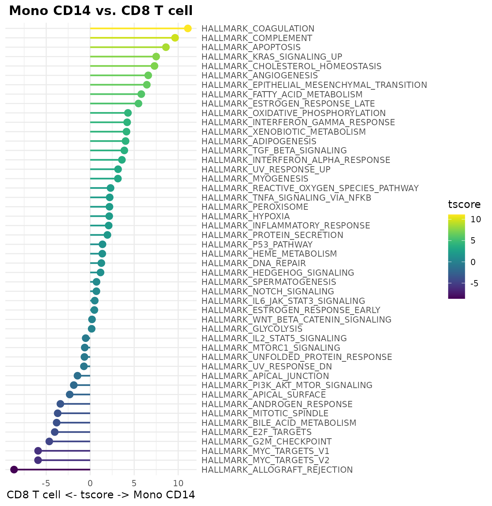
Blue Color Scheme
Example using the “blue” color scheme:
plot_grid(
DimPlot2(pbmc, cols = "pro_blue", theme = NoAxes() + NoLegend()),
ClusterDistrBar(pbmc$orig.ident, pbmc$cluster, cols = "pro_blue", flip = FALSE) +
theme(axis.title.x = element_blank())
)
Purple Color Scheme
Example using the “purple” color scheme:
plot_grid(
DimPlot2(pbmc, cols = "pro_purple", theme = NoAxes() + NoLegend()),
ClusterDistrBar(pbmc$orig.ident, pbmc$cluster, cols = "pro_purple", flip = FALSE) +
theme(axis.title.x = element_blank())
) #### Generating and Customizing Colors with
#### Generating and Customizing Colors with color_pro
After showcasing color_pro color schemes through
practical plotting examples, let’s explore how you can directly generate
these color codes using the color_pro function. This allows
for greater flexibility in applying these colors beyond the integrated
visualization functions.
Generating Color Codes
You can generate between 2 to 50 colors using the
color_pro function, which can be useful when you need a
custom color palette for your visualizations.
Example of generating different sets of colors:
library(SeuratExtend)
color_pro(n = 2) # Example output: "#a05d49" "#6181a7"
color_pro(5) # Example output: "#996742" "#5e824b" "#5d7880" "#7169a7" "#9f516c"
color_pro(10) # Generates 10 colors
color_pro(20) # Generates 20 colors
color_pro(50) # Generates 50 colorsThe following plot demonstrates the visual impact of these palettes:

Choosing Color Schemes
color_pro allows the selection of up to seven different
color styles: “default”, “light”, “red”, “yellow”, “green”, “blue”,
“purple”. You can specify these styles by name or by their corresponding
numeric value.
Example of generating 10 colors from each style:
color_pro(10, col.space = 1) # default
color_pro(10, 2) # light
color_pro(10, 3) # red
color_pro(10, 4) # yellow
color_pro(10, 5) # green
color_pro(10, 6) # blue
color_pro(10, 7) # purpleVisual comparison of these color schemes:
Sorting Options
color_pro supports sorting by “hue” (default) or by
“difference” for enhanced distinction among colors. This feature can be
specified by name or by numbers 1 or 2.
Example of sorting colors by hue and by difference:
Visualizing the effect of different sorting methods:

Random Sequence Options
Each color scheme and number of colors have five different random sequences available, providing variations even within the same parameters.
Example of generating different sets from the default color scheme:
color_pro(10, 1, 1, set = 1)
color_pro(10, 1, 1, 2)
color_pro(10, 1, 1, 3)
color_pro(10, 1, 1, 4)
color_pro(10, 1, 1, 5)Visualizing different random sequences:
Exploring color_iwh Color Series
In addition to color_pro, SeuratExtend
incorporates the I Want Hue algorithm to generate a series
of color palettes. These palettes, known as color_iwh,
include five default styles optimized for various visualization needs.
Unlike color_pro, color_iwh does not support
different sorting options and defaults to sorting by difference for
maximum color distinction.
color_iwh Color Series Overview
The color_iwh function provides the following predefined
color schemes: - default: Suitable for general use with
subtle color variations, supporting 2 to 20 colors. -
intense: Features vivid colors, supporting 2 to 30
colors, ideal for making impactful visual statements. -
pastel: Offers soft, soothing colors, supporting 2 to
18 colors, perfect for light-themed visualizations. -
all: Utilizes the full color spectrum with a soft
k-means clustering approach, supporting 2 to 50 colors. -
all_hard: Also covers the full color spectrum but uses
a hard force vector clustering method, supporting 30 to 50 colors.
Generating Colors with color_iwh
To generate colors using the color_iwh function, simply
specify the number of colors and the style index. Here are examples of
generating 10 colors from each predefined style:
Example of generating colors from each color_iwh
style:
color_iwh(10, 1) # default
color_iwh(10, 2) # intense
color_iwh(10, 3) # pastel
color_iwh(10, 4) # all
color_iwh(30, 5) # all_hardVisual comparison of color_iwh palettes:
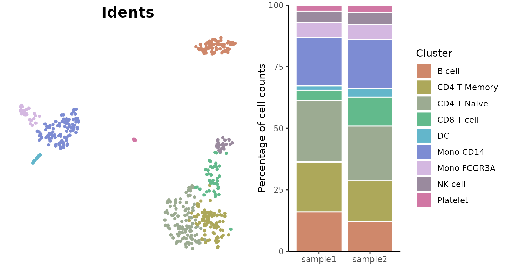
Application of Color Functions in Visualization Tools
In the SeuratExtend package, functions such as
DimPlot2, VlnPlot2, Heatmap,
WaterfallPlot, and ClusterDistrBar allow easy
integration of color schemes directly through the cols or
col_theme parameters. This integration means that you do
not have to manually generate color codes using color_pro
or color_iwh unless customization beyond the presets is
needed. Below, we detail how to apply these parameters effectively in
various functions.
Applying Colors to Discrete Variables
In DimPlot2, VlnPlot2, and
ClusterDistrBar, the cols parameter can accept
a variety of inputs to color discrete variables. These inputs
include:
- color_pro styles: “default”, “light”, “pro_red”, “pro_yellow”, “pro_green”, “pro_blue”, “pro_purple”.
- color_iwh styles: “iwh_default”, “iwh_intense”, “iwh_pastel”, “iwh_all”, “iwh_all_hard”.
-
Brewer color scales: Available through
brewer.pal.info, such as “Blues”, “Dark2”, etc. - Manually specified colors: Direct input of color codes.
Example of using color_pro style in
DimPlot2:
DimPlot2(pbmc, cols = "light")
Applying Colors to Continuous Variables
In DimPlot2, Heatmap, and
WaterfallPlot, the cols or
col_theme parameters can also be used to assign colors to
continuous variables. Options for continuous variable coloration
include:
- Predefined color schemes: Using “A”, “B”, “C”, “D”, or “E” from the ‘viridis’ package.
-
Three-point gradients: A named vector with keys
“low”, “mid”, and “high” for colors at specific data points, often used
for diverging color schemes. Example:
c(low = "blue", mid = "white", high = "red") -
Two-point gradients: A simple two-color gradient
using keys “low” and “high”. Example:
c(low = "blue", high = "red") - Custom color gradients: A vector of colors to generate a gradient across a range, suitable for complex data visualizations.
Example of applying a color gradient in DimPlot2 for a
continuous variable:
DimPlot2(pbmc, features = "CD3D", cols = "D")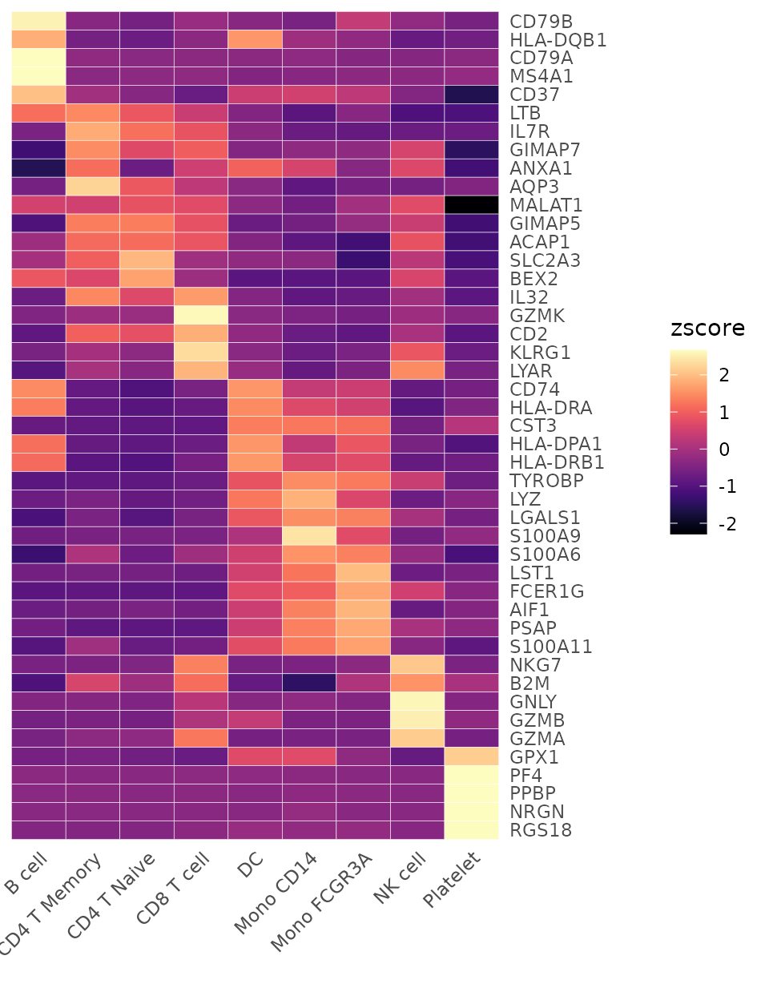
Additional Color-Related Functions
In the discussion of the FeaturePlot3 functionality, we
touched upon the RYB mixing system used in SeuratExtend.
The method for mixing these colors is a proprietary development of
SeuratExtend, designed as an approximation to the
traditional RYB color mixing. This approach includes specific
adjustments to the primary RYB colors to make them more suitable for
visualizing expression gradients:
-
Yellow: Since pure yellow can be too pale for
effective gradient display, it is deepened in
SeuratExtend. - Red and Blue: Pure shades of these colors can be harsh on the eyes, so they have been softened to enhance visual comfort.
These modifications ensure that the colors used in visualizations are both effective in conveying information and easier on the eyes.
Using ryb2rgb() to Convert RYB to RGB Hex Codes
The ryb2rgb() function in SeuratExtend
translates RYB values into conventional RGB hex codes, which can then be
used in standard plotting functions. This function accepts a vector of
three numbers (ranging from 0 to 1), each representing the intensity of
red, yellow, and blue, respectively. Here is a simple example of how to
use ryb2rgb():
## [1] "#CCAF80"
# Outputs: "#CCAF80"Visualizing Primary and Secondary Colors
To illustrate how ryb2rgb() interprets different
combinations of primary and secondary colors, consider the following
example to create a visual palette:
library(scales)
library(dplyr)
data.frame(
red = c(1, 0, 0),
yellow = c(0, 1, 0),
blue = c(0, 0, 1),
orange = c(1, 1, 0),
purple = c(1, 0, 1),
green = c(0, 1, 1),
black = c(1, 1, 1),
grey = c(0.5, 0.5, 0.5),
white = c(0, 0, 0)
) %>%
apply(2, ryb2rgb) %>%
show_col()
This section shows a palette derived from various RYB combinations,
demonstrating how ryb2rgb() translates these combinations
into RGB hex codes. This functionality is particularly useful for
researchers and data scientists who need to customize their color
schemes beyond the standard options provided by most visualization
libraries.
Using save_colors to Manage Color Settings
The save_colors function is designed to store custom
color settings within the Seurat object, facilitating their
reuse across various visualization functions. This approach allows for
consistent color usage across multiple plots and simplifies the
management of color settings within a project.
This function primarily serves to complement visualization functions
such as DimPlot2 and VlnPlot2. By storing
color settings directly within the Seurat object,
save_colors enables these visualization tools to
automatically retrieve and apply the specified colors to variables such
as gene expressions or clustering results. This ensures consistency and
repeatability in the color schemes of your plots.
Here’s how you can use save_colors to specify and store
color settings for certain variables, which can then be automatically
utilized by functions like DimPlot2:
pbmc <- save_colors(pbmc, col_list = list(
"cluster" = "pro_blue",
"CD14" = "D",
"CD3D" = c("#EEEEEE", "black")
))
# Now, when using DimPlot2, the specified colors for 'cluster', 'CD14', and 'CD3D' are automatically applied
DimPlot2(pbmc, features = c("cluster", "orig.ident", "CD14", "CD3D"))
This example demonstrates setting custom colors for the
cluster, CD14, and CD3D variables
and then using these colors in a dimension reduction plot without
needing to specify them again in the DimPlot2 function. The
colors are stored in the Seurat object and retrieved
dynamically by the plotting function.
## R version 4.4.0 (2024-04-24)
## Platform: x86_64-pc-linux-gnu
## Running under: Ubuntu 20.04.6 LTS
##
## Matrix products: default
## BLAS: /usr/lib/x86_64-linux-gnu/blas/libblas.so.3.9.0
## LAPACK: /usr/lib/x86_64-linux-gnu/lapack/liblapack.so.3.9.0
##
## locale:
## [1] LC_CTYPE=en_US.UTF-8 LC_NUMERIC=C
## [3] LC_TIME=de_BE.UTF-8 LC_COLLATE=en_US.UTF-8
## [5] LC_MONETARY=de_BE.UTF-8 LC_MESSAGES=en_US.UTF-8
## [7] LC_PAPER=de_BE.UTF-8 LC_NAME=C
## [9] LC_ADDRESS=C LC_TELEPHONE=C
## [11] LC_MEASUREMENT=de_BE.UTF-8 LC_IDENTIFICATION=C
##
## time zone: Europe/Brussels
## tzcode source: system (glibc)
##
## attached base packages:
## [1] stats4 stats graphics grDevices utils datasets methods
## [8] base
##
## other attached packages:
## [1] hyc_0.1.3 tidyr_1.3.1
## [3] DelayedMatrixStats_1.26.0 DelayedArray_0.30.1
## [5] SparseArray_1.4.8 S4Arrays_1.4.1
## [7] abind_1.4-5 IRanges_2.38.0
## [9] S4Vectors_0.42.0 MatrixGenerics_1.16.0
## [11] matrixStats_1.3.0 BiocGenerics_0.50.0
## [13] ggbeeswarm_0.7.2 ggtext_0.1.2
## [15] rlist_0.4.6.2 magrittr_2.0.3
## [17] ggpubr_0.6.0 ggrepel_0.9.5
## [19] cowplot_1.1.3 viridis_0.6.5
## [21] viridisLite_0.4.2 rlang_1.1.4
## [23] scales_1.3.0 reshape2_1.4.4
## [25] mosaic_1.9.1 mosaicData_0.20.4
## [27] ggformula_0.12.0 Matrix_1.7-0
## [29] ggplot2_3.5.1 lattice_0.22-6
## [31] dplyr_1.1.4 SeuratExtend_1.0.0
## [33] SeuratExtendData_0.2.0 Seurat_5.1.0
## [35] SeuratObject_5.0.2 sp_2.1-4
##
## loaded via a namespace (and not attached):
## [1] RcppAnnoy_0.0.22 splines_4.4.0 later_1.3.2
## [4] tibble_3.2.1 polyclip_1.10-6 fastDummies_1.7.3
## [7] lifecycle_1.0.4 rstatix_0.7.2 globals_0.16.3
## [10] MASS_7.3-60.2 backports_1.5.0 plotly_4.10.4
## [13] sass_0.4.9 rmarkdown_2.27 jquerylib_0.1.4
## [16] yaml_2.3.8 httpuv_1.6.15 sctransform_0.4.1
## [19] spam_2.10-0 spatstat.sparse_3.0-3 reticulate_1.37.0
## [22] pbapply_1.7-2 RColorBrewer_1.1-3 zlibbioc_1.50.0
## [25] Rtsne_0.17 purrr_1.0.2 labelled_2.13.0
## [28] irlba_2.3.5.1 listenv_0.9.1 spatstat.utils_3.0-4
## [31] goftest_1.2-3 RSpectra_0.16-1 spatstat.random_3.2-3
## [34] fitdistrplus_1.1-11 parallelly_1.37.1 pkgdown_2.0.9
## [37] commonmark_1.9.1 leiden_0.4.3.1 codetools_0.2-20
## [40] xml2_1.3.6 tidyselect_1.2.1 farver_2.1.2
## [43] spatstat.explore_3.2-7 jsonlite_1.8.8 progressr_0.14.0
## [46] ggridges_0.5.6 survival_3.7-0 systemfonts_1.1.0
## [49] tools_4.4.0 ragg_1.3.2 ica_1.0-3
## [52] Rcpp_1.0.12 glue_1.7.0 gridExtra_2.3
## [55] xfun_0.44 withr_3.0.0 fastmap_1.2.0
## [58] fansi_1.0.6 digest_0.6.35 R6_2.5.1
## [61] mime_0.12 textshaping_0.4.0 colorspace_2.1-0
## [64] scattermore_1.2 tensor_1.5 markdown_1.13
## [67] spatstat.data_3.0-4 utf8_1.2.4 generics_0.1.3
## [70] data.table_1.15.4 httr_1.4.7 htmlwidgets_1.6.4
## [73] uwot_0.2.2 pkgconfig_2.0.3 gtable_0.3.5
## [76] lmtest_0.9-40 XVector_0.44.0 htmltools_0.5.8.1
## [79] carData_3.0-5 dotCall64_1.1-1 png_0.1-8
## [82] knitr_1.47 rstudioapi_0.16.0 nlme_3.1-165
## [85] cachem_1.1.0 zoo_1.8-12 stringr_1.5.1
## [88] KernSmooth_2.23-24 parallel_4.4.0 miniUI_0.1.1.1
## [91] vipor_0.4.7 desc_1.4.3 pillar_1.9.0
## [94] grid_4.4.0 vctrs_0.6.5 RANN_2.6.1
## [97] promises_1.3.0 car_3.1-2 xtable_1.8-4
## [100] cluster_2.1.6 beeswarm_0.4.0 evaluate_0.23
## [103] cli_3.6.2 compiler_4.4.0 crayon_1.5.2
## [106] future.apply_1.11.2 ggsignif_0.6.4 labeling_0.4.3
## [109] plyr_1.8.9 forcats_1.0.0 fs_1.6.4
## [112] stringi_1.8.4 deldir_2.0-4 munsell_0.5.1
## [115] lazyeval_0.2.2 spatstat.geom_3.2-9 mosaicCore_0.9.4.0
## [118] RcppHNSW_0.6.0 hms_1.1.3 patchwork_1.2.0
## [121] sparseMatrixStats_1.16.0 future_1.33.2 shiny_1.8.1.1
## [124] highr_0.11 haven_2.5.4 ROCR_1.0-11
## [127] gridtext_0.1.5 igraph_1.3.4 broom_1.0.6
## [130] memoise_2.0.1 bslib_0.7.0